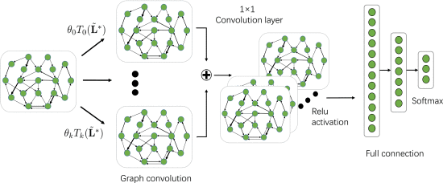

braindecode.models.DGCNN#
- class braindecode.models.DGCNN(n_outputs=None, n_chans=None, chs_info=None, n_times=None, input_window_seconds=None, sfreq=None, n_filters=64, cheb_order=2, n_neighbors=5, mlp_dims=(256, ), activation=<class 'torch.nn.modules.activation.ReLU'>, drop_prob=0.5)[source]#
DGCNN for EEG classification from Song et al. (2018) [dgcnn].
Graph Neural Network Channel

Architectural Overview
DGCNN is a graph-based architecture that models EEG channels as nodes in a graph and dynamically learns the adjacency matrix \(\mathbf{W}^*\) jointly with all other parameters via back-propagation (Algorithm 1 in [dgcnn]). The end-to-end flow is:
(i) learn inter-channel relationships by dynamically updating a trainable adjacency matrix,
(ii) apply spectral graph convolution via Chebyshev polynomial approximation to extract graph-structured features, and
classify with a fully connected head.
Different from traditional GCNN methods that predetermine the connections of the graph nodes according to their spatial positions, “the proposed DGCNN method learns the adjacency matrix in a dynamic way, i.e., the entries of the adjacency matrix are adaptively updated with the changes of graph model parameters during the model training” [dgcnn].
Macro Components
_LearnableAdjacency(Dynamical adjacency → graph Laplacian)Operations.
A trainable \((N \times N)\) matrix \(\mathbf{W}^*\) initialized from electrode spatial positions via a Gaussian kernel (Eq. 1): \(w_{ij} = \exp(-\mathrm{dist}(i,j)^2 / 2\rho^2)\) for the \(k\)-nearest neighbors, zero otherwise.
ReLU applied after every gradient update to keep all entries non-negative (Algorithm 1, step 3).
The normalized graph Laplacian is derived as (Eq. 2): \(\mathbf{L} = \mathbf{I} - \mathbf{D}^{-1/2}\,\mathbf{W}^*\,\mathbf{D}^{-1/2}\).
The adjacency matrix captures intrinsic functional relationships between EEG channels that pure spatial proximity may not reflect.
ChebyshevGraphConv(Chebyshev spectral graph convolution + 1x1 mixing)Operations.
\(K\)-order Chebyshev polynomial expansion of spectral graph filters on the learned Laplacian (Eqs. 11-13):
\[\mathbf{y} = \sum_{k=0}^{K-1} \theta_k\, T_k(\tilde{\mathbf{L}}^*)\, \mathbf{x},\]where \(T_k\) are Chebyshev polynomials computed recursively (Eq. 12) and \(\theta_k\) are learnable coefficients.
A \(1 \times 1\) convolution (linear projection) that mixes the concatenated Chebyshev components, mapping each node’s input features to
n_filtersoutput features.
“Following the graph filtering operation is a \(1 \times 1\) convolution layer, which aims to learn the discriminative features among the various frequency domains” [dgcnn].
Activation layer. ReLU with a learnable per-feature bias ensures non-negative outputs of the graph filtering layer [dgcnn].
Classifier Head. Flatten all node features and classify via a multi-layer fully connected network with dropout and softmax.
Graph Convolution Details
Spatial (graph structure). The adjacency matrix encodes pairwise relationships between EEG channels. It is initialized from 3-D electrode positions using a Gaussian kernel with kNN sparsification (Eq. 1), then jointly optimized with all other parameters. This allows the model to discover functional connectivity patterns that differ from the initial spatial layout. The spectral graph convolution then propagates information across neighboring nodes according to this learned graph topology.
Spectral (graph spectral domain). The Chebyshev polynomial approximation (Eq. 11) operates in the graph spectral domain defined by the eigenvalues of the graph Laplacian. The \(K\)-order approximation acts as a localized graph filter: each node aggregates information from its \(K\)-hop neighborhood. This is analogous to a band-pass filter in the graph frequency domain.
Temporal / Frequency. No explicit temporal convolution or frequency decomposition is performed within the network. In the original paper, the input features per node are pre-extracted frequency-band features (e.g., differential entropy from \(\delta\), \(\theta\), \(\alpha\), \(\beta\), \(\gamma\) bands). When used with raw time series, the time samples serve directly as node features.
Additional Comments
Dynamic vs. static graph. Traditional GCNN methods fix the adjacency matrix before training based on spatial positions. DGCNN learns it end-to-end, allowing the graph to capture task-relevant functional connectivity rather than mere spatial proximity.
Chebyshev order. The order \(K\) controls the receptive field on the graph: \(K=1\) uses only direct neighbors, \(K=2\) (default) reaches 2-hop neighborhoods. Higher orders increase expressivity but also parameter count.
Regularization. Dropout in the classification head and the ReLU constraint on the adjacency matrix provide implicit regularization. The loss function in the original paper also includes an explicit \(\ell_2\) penalty on all parameters (Eq. 14).
- Parameters:
n_outputs (
int|None) – Number of outputs of the model. This is the number of classes in the case of classification.chs_info (
list[dict] |None) – Information about each channel, typically obtained frommne.Info['chs']. Each entry must contain a'loc'key with 3-D electrode positions so the initial adjacency matrix can be built from spatial proximity (Eq. 1). A montage must be set on themne.Infoobject (seemne.Info.set_montage()). IfNoneor positions cannot be extracted, raised ValueError (see Notes).n_times (
int|None) – Number of time samples of the input window.input_window_seconds (
float|None) – Length of the input window in seconds.sfreq (
float|None) – Sampling frequency of the EEG recordings.n_filters (
int) – Number of spectral graph-convolutional filters. This is the output feature dimension per node produced by the Chebyshev graph convolution followed by the \(1 \times 1\) convolution (see Fig. 2 in the paper). The original code uses 64.cheb_order (
int) – Order \(K\) of the Chebyshev polynomial approximation (Eq. 11).n_neighbors (
int) – Number of spatial nearest neighbors per node used to build the initial adjacency matrix (Eq. 1).mlp_dims (
tuple[int,...]) – Hidden-layer sizes of the fully connected classification head.activation (
type[Module]) – Activation function class used after the graph convolution and in the classification head.drop_prob (
float) – Dropout probability in the classification head.
- Raises:
ValueError – If some input signal-related parameters are not specified: and can not be inferred.
Notes
If some input signal-related parameters are not specified, there will be an attempt to infer them from the other parameters.
References
Hugging Face Hub integration
When the optional
huggingface_hubpackage is installed, all models automatically gain the ability to be pushed to and loaded from the Hugging Face Hub. Install with:pip install braindecode[hub]
Pushing a model to the Hub:
from braindecode.models import DGCNN # Train your model model = DGCNN(n_chans=22, n_outputs=4, n_times=1000) # ... training code ... # Push to the Hub; ``datasets`` and ``base_model`` go to the card model.push_to_hub( repo_id="username/my-dgcnn-model", commit_message="Initial model upload", model_card_kwargs={"datasets": ["BNCI2014_001"]}, )
Loading a model from the Hub:
from braindecode.models import DGCNN # Load pretrained model model = DGCNN.from_pretrained("username/my-dgcnn-model") # Data the weights were trained on, from the Hub model card print(model.card_data.datasets if model.card_data else None) # Load with a different number of outputs (head is rebuilt automatically) model = DGCNN.from_pretrained("username/my-dgcnn-model", n_outputs=4)
Extracting features and replacing the head:
import torch x = torch.randn(1, model.n_chans, model.n_times) # Extract encoder features (consistent dict across all models) out = model(x, return_features=True) features = out["features"] # Replace the classification head model.reset_head(n_outputs=10)
Saving and restoring full configuration:
import json config = model.get_config() # all __init__ params with open("config.json", "w") as f: json.dump(config, f) model2 = DGCNN.from_config(config) # reconstruct (no weights)
All model parameters (both EEG-specific and model-specific such as dropout rates, activation functions, number of filters) are automatically saved to the Hub and restored when loading.
See Loading and Adapting Pretrained Foundation Models for a complete tutorial.
Methods